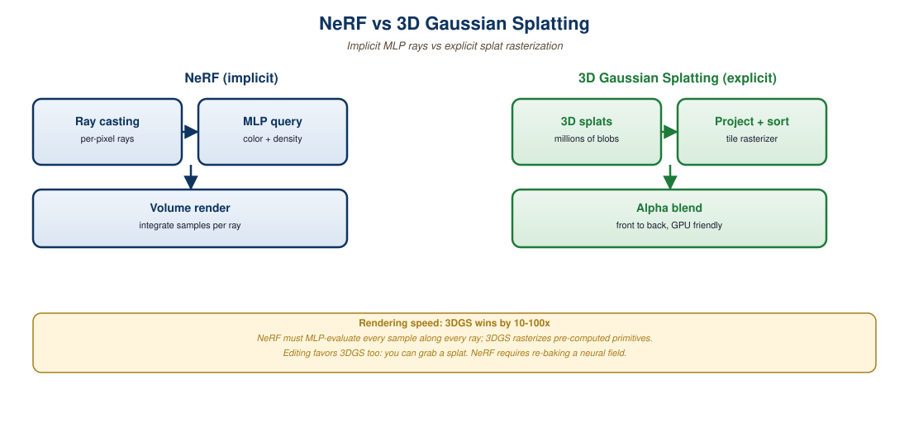
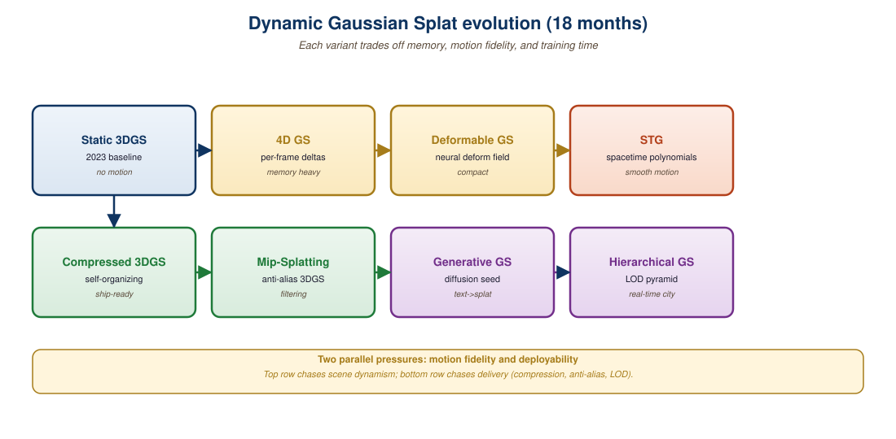

"NeRF gave us photoreal 3D at the cost of forty minutes per frame. Gaussians gave it back at 120 fps."
Common refrain in the radiance-field community, 2024
3D Gaussian Splatting (3DGS) replaced Neural Radiance Fields (NeRFs) as the default representation for photoreal scene reconstruction in late 2023, and by 2026 it powers nearly every shipping product in volumetric capture, AR scene scanning, and real-time 3D synthesis. A scene becomes a cloud of millions of anisotropic Gaussians, each with position, covariance, opacity, and view-dependent color expressed as spherical harmonics. Rendering is a sort-and-blend operation on the GPU rasterizer rather than expensive ray marching, which lets the same scene render at over 100 fps where a comparable-quality NeRF needed seconds per frame. This section walks through the math, the training loop, COLMAP preprocessing, and the first extensions toward dynamic and language-conditioned splats. The optimization shares its bones with the gradient descent of Chapter 2, but the parameters are 3D Gaussians instead of weights of an MLP.
Prerequisites
This section assumes comfort with camera matrices, basic linear algebra (covariance, eigendecomposition), and the diffusion intuition from Section 31.1. Familiarity with PyTorch gradient flow from Section 2.1 helps when reading the training loop.

36.1.1 From NeRF to Splats: The Representation Shift
A Neural Radiance Field, introduced by Mildenhall et al. (2020), trains an MLP to map a 5D coordinate (3D position plus 2D viewing direction) to a 4D output (RGB color plus volumetric density). Rendering a single pixel requires sampling dozens to hundreds of points along the camera ray, evaluating the MLP at each, and integrating the radiance with quadrature. Quality is excellent but rendering is slow: an unaccelerated NeRF takes seconds per 800x800 frame and minutes to hours to train.
3D Gaussian Splatting, introduced by Kerbl et al. (2023) at SIGGRAPH 2023, throws away the MLP. The scene is represented by a set of explicit 3D Gaussians, each parameterized by:
- A 3D position $\mu \in \mathbb{R}^3$ (the mean).
- A 3x3 covariance matrix $\Sigma$, factored as $\Sigma = R S S^\top R^\top$ where $R$ is a rotation (stored as a quaternion) and $S$ is a diagonal scale.
- An opacity scalar $\alpha \in [0, 1]$.
- A view-dependent color, typically encoded as the coefficients of low-order spherical harmonics (SH) of degree 0 to 3.
The probability density of one Gaussian at point $x$ is the familiar form $G(x) = \exp\!\big({-\frac{1}{2}(x-\mu)^\top \Sigma^{-1}(x-\mu)}\big)$. To render, each 3D Gaussian is projected to a 2D image-space Gaussian using the affine approximation of the perspective projection, splatted on the framebuffer, and alpha-composited front-to-back after sorting by depth.
A NeRF integrates radiance per ray. A 3DGS rasterizer integrates radiance per pixel by accumulating contributions from sorted Gaussians until opacity saturates. Both implement the same volume rendering equation, but 3DGS pays per Gaussian (a few million), while NeRF pays per sample (hundreds of millions per frame). When the geometry is sparse, which is true of most real scenes, the explicit representation wins by two orders of magnitude.
36.1.2 The Differentiable Rasterizer
For a pixel at image coordinate $u$, the rendered color is an alpha-composite over the depth-sorted Gaussians that overlap the pixel:
$$ C(u) = \sum_{i \in N} c_i\, \alpha_i'(u) \prod_{j=1}^{i-1} \big(1 - \alpha_j'(u)\big) $$
where $c_i$ is the SH-evaluated color of Gaussian $i$ in the viewing direction, and $\alpha_i'(u) = \alpha_i \cdot \exp\!\big({-\frac{1}{2}(u-\mu_i')^\top \Sigma_i'^{-1}(u-\mu_i')}\big)$ is the 2D Gaussian footprint scaled by the learned opacity. The projection $\Sigma_i'$ is computed by the Jacobian of the perspective transform; the original Kerbl et al. paper derives this in closed form and the CUDA kernel evaluates it in a few tens of FLOPs per pixel-Gaussian pair.
Because every operation, projection, exponential, alpha compositing, is differentiable, gradients flow from the rendered pixel back to every Gaussian parameter. This is the same trick that powers neural rendering in general; the novelty is that the primitive is an explicit Gaussian instead of a queried MLP.
| Parameter | Shape per Gaussian | Total for 1M Gaussians | Notes |
|---|---|---|---|
| Position $\mu$ | 3 floats | 12 MB | FP32 by default |
| Rotation (quaternion) | 4 floats | 16 MB | Normalized after each step |
| Scale (log) | 3 floats | 12 MB | Exponentiated to enforce positivity |
| Opacity (logit) | 1 float | 4 MB | Sigmoid to $[0, 1]$ |
| SH degree 3 | 48 floats (3 channels x 16 coeffs) | 192 MB | Largest term; SH degree 0 is just RGB |
36.1.3 The Training Loop: Initialization, Loss, Densification
Training a 3DGS scene starts from a sparse point cloud, evolves it through gradient descent, and densifies or prunes Gaussians along the way. The pseudocode below captures the essential loop from the reference implementation.
# 3DGS training loop, simplified. Real code lives in
# https://github.com/graphdeco-inria/gaussian-splatting
import torch
from gsplat import rasterization
gaussians = GaussianModel.from_point_cloud(colmap_points) # ~100k init
optimizer = torch.optim.Adam(gaussians.parameters(), lr=1.6e-4)
for step in range(30_000):
cam, gt_image = dataset.sample_view() # random training view
render, viewspace, visibility = rasterization(
gaussians.means, gaussians.quats, gaussians.scales,
gaussians.opacities, gaussians.colors,
viewmat=cam.world_to_cam, K=cam.intrinsics,
width=cam.W, height=cam.H,
)
# L1 + SSIM is the standard 3DGS photometric loss
loss = (1.0 - lam) * l1(render, gt_image) + lam * (1.0 - ssim(render, gt_image))
loss.backward()
optimizer.step()
optimizer.zero_grad(set_to_none=True)
# Adaptive density control: split big Gaussians with high grad,
# clone small ones, prune low-opacity.
if step % 100 == 0 and step < 15_000:
gaussians.densify_and_prune(
grad_threshold=0.0002,
min_opacity=0.005,
max_screen_size=20,
)gsplat (the BSD-licensed re-implementation by Nerfstudio), and the adaptive density control that splits, clones, or prunes Gaussians based on their accumulated screen-space gradient.If you simply ran Adam on the initial point cloud you would get a blurry mess: there are not enough Gaussians to represent fine geometry. The adaptive density control monitors the screen-space gradient of every Gaussian. A high gradient indicates the Gaussian is straddling a feature it cannot represent: if it is small, the algorithm clones it (duplicate at the same location); if it is large, the algorithm splits it (replace with two smaller Gaussians along the gradient direction). Opacity below a threshold triggers pruning. This produces a roughly self-organizing point density that matches scene complexity.
36.1.4 COLMAP and the Camera-Pose Bootstrap
Every 3DGS pipeline starts with a structure-from-motion (SfM) pass that recovers camera poses and a sparse point cloud from input images. The de facto tool is COLMAP by Schoenberger and Frahm. The pipeline is:
- Feature detection with SIFT on each image.
- Pairwise matching (exhaustive for small captures, vocab-tree for larger ones).
- Incremental SfM that triangulates a sparse 3D point cloud while jointly optimizing camera poses through bundle adjustment.
- Optional dense MVS, though 3DGS does not require dense depth.
# Minimal COLMAP CLI invocation for a 3DGS capture.
# Assumes ~100 photos in ./input/ shot from varied angles.
colmap feature_extractor \
--database_path scene.db \
--image_path ./input/ \
--ImageReader.single_camera 1
colmap exhaustive_matcher --database_path scene.db
mkdir sparse
colmap mapper \
--database_path scene.db \
--image_path ./input/ \
--output_path ./sparse
# Convert to the format 3DGS expects (cameras.bin, images.bin, points3D.bin)
colmap model_converter \
--input_path ./sparse/0 \
--output_path ./sparse/0 \
--output_type BINThe single biggest source of bad 3DGS reconstructions is bad camera poses. COLMAP can silently lose track of a chunk of your input if you have low texture (white walls), motion blur, rolling-shutter artifacts, or images shot from too similar a viewpoint. Always inspect sparse/0 before training: if half your images are missing, your splats will collapse or float. Newer alternatives like Nerfstudio's ns-process-data wrap COLMAP with HLOC-based matching and produce noticeably more robust poses on hard captures.
36.1.5 Rendering, Viewers, and Web Export
A trained 3DGS scene is a single PLY file with one row per Gaussian. The community has converged on the .splat / .ksplat formats for compressed web delivery. Real-time viewers run in WebGL: see antimatter15/splat for a minimal viewer, PlayCanvas Supersplat for an editor, and Nerfstudio's gsplat-based viewer for a production-quality experience. Browser rendering of a 1M-Gaussian scene at 1080p typically clears 60 fps on a 2022 MacBook.
For production deployment, the LumaAI Luma Web Library wraps splat playback in a React component; Polycam, KIRI Engine, and Postshot offer mobile-to-cloud capture-train-export pipelines.
36.1.6 Dynamic Splats: A Preview of Section 36.2
Static 3DGS captures a frozen scene. By 2024 the field had moved to dynamic splats where each Gaussian is also a function of time. The dominant approaches are:
- 4DGS (Wu et al., 2024) attaches a small MLP to each Gaussian that predicts a per-timestep position and rotation delta. Memory grows linearly with Gaussian count but is independent of clip length.
- Dynamic 3D Gaussians (Luiten et al., 2024) explicitly tracks each Gaussian's position over time and adds isotropic, local-rigidity, and rotational regularizers that prevent it from drifting through scene structure.
- Deformable 3DGS (Yang et al., 2024) uses a shared deformation field MLP conditioned on canonical position and time, similar to D-NeRF.
Section 36.2 picks this up in detail; here it suffices to note that the static 3DGS infrastructure (rasterizer, optimizer, densifier) transfers cleanly to the dynamic case with relatively small changes to the per-Gaussian state.

3D Gaussian Splatting is the 2024-2026 default for photoreal 3D reconstruction. An explicit cloud of millions of anisotropic Gaussians with view-dependent SH color is differentiably rasterized by a CUDA kernel that runs at 100+ fps. Training is end-to-end gradient descent on an L1 + SSIM photometric loss with adaptive density control. The only non-trivial preprocessing is COLMAP-derived camera poses. Everything in the rest of this chapter, dynamic splats, image-to-3D, scene relighting, builds on this primitive.
- Why is the alpha-compositing equation in 3DGS mathematically equivalent to NeRF volume rendering, yet 100x faster in practice?
- What goes wrong if you initialize 3DGS from a uniform random point cloud instead of COLMAP's sparse SfM points?
- The SH degree-3 coefficients dominate memory. When can you safely drop to SH degree 0 (constant RGB per Gaussian)?
- Why does the adaptive density controller need both a "clone" and a "split" operation? What does each fix that the other does not?
What Comes Next
Section 36.2: 4D and Dynamic Splats extends the static formulation to time. We will look at how 4DGS, Dynamic 3D Gaussians, and Spacetime Gaussians handle moving cameras, articulated humans, and the long-tail problems of motion priors and temporal regularization.